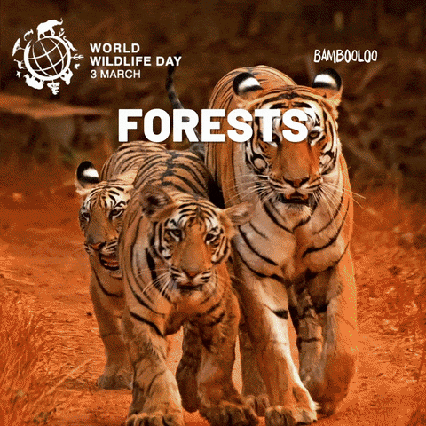
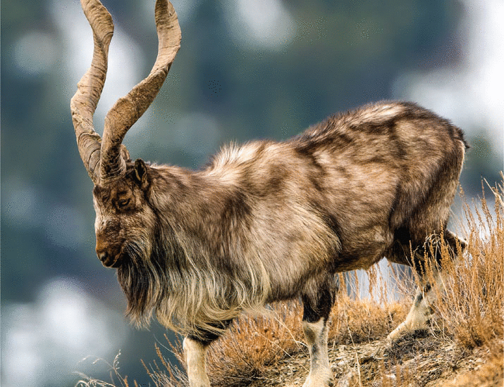
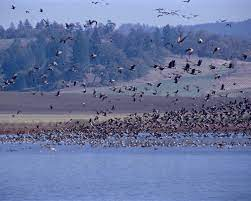
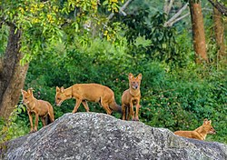

Welcome to our wildlife website, Wildlife refers to undomesticated animal species, but has come to include all organisms that grow or live wild in an area without being introduced by humans.Wildlife was also synonymous to game: those birds and mammals that were hunted for sport. Wildlife can be found in all ecosystems. Deserts, plains, grasslands, woodlands, forests, and other ar eas,including the most developed urban areas, all have distinct forms of wildlife. While the term in popular culture usually refers to animals that are untouched by human factors, most scientists agree that much wildlife is affected by human activities.Some wildl ife threaten human safety, health, property, and quality of life. However, many wild animals, even the dangerous ones, have value to human beings.This value might be economic, educational, or emotional in nature.Humans have historically tended to separate civilizat ion from wildlife in a number of ways, including the legal, social, and moral senses. Some animals, however, have adapted to suburban environments. This includes such animals as feral cats, dogs, mice, and rats. Some religions declare certain animals to be sacred, a nd in modern times, concern for the natural environment has provoked activists to protest against the exploitation of wildlife for hu man benefit or entertainment.Global wildlife populations have decreased by 68% since 1970 as a result of human activity, particularly overconsumption, population growth, and intensive farming, according to a 2020 World Wildlife Fund's Living Planet Report and the Zool ogical Society of London's Living Planet Index measure, which is further evidence that humans have unleashed a sixth mass extinction e vent.According to CITES, it has been estimated thatannually the international wildlife trade amounts to billions of dollars and it aff ects hundreds of millions of animal and plant specimen.

The wildlife of Pakistan comprises a diverse flora and fauna in a wide range of habitats from sea level to high elevation areas i n the mountains, including 195 mammal, 668 bird species and more than 5000 species of Invertebrates. This diverse composition of the cou ntry's fauna is associated with its location in the transitional zone between two major zoogeographical regions, the Palearctic, and the Oriental. The northern regions of Pakistan, which include Khyber Pakhtunkhwa and Gilgit Baltistan include portions of two biodiversity ho tspot, Mountainsof Central Asia and Himalayas.

The wildlife of India

